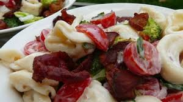

Tortellini Bacon Broccoli Salad
Ingredients
- 2 (9 ounce) packages refrigerated three-cheese tortellini
- 1 pound bacon
- 4 cups chopped broccoli
- 1 pint grape tomatoes, halved
- 2 green onions, finely chopped
Preparation
- Step 1 - Cook the tortellini according to the package directions, drain, rinse with cold water, and refrigerate until cool, about 30 minutes.
- Step 2 - Place the bacon in a large, deep skillet, and cook over medium-high heat, turning occasionally, until evenly browned, about 10 minutes. Drain the bacon slices on a paper towel-lined plate. Chop the bacon into 1/2-inch pieces while still a little warm.
- Step 3 - Place the tortellini, bacon, broccoli, grape tomatoes, and green onions into a salad bowl. Pour the dressing over the ingredients, and toss lightly to coat. Chill in refrigerator before serving.